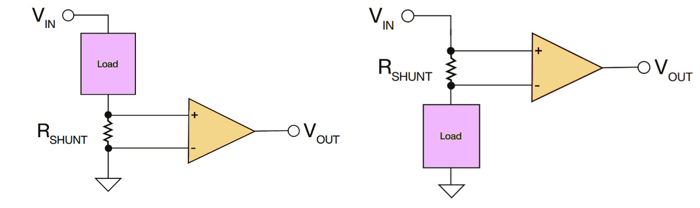
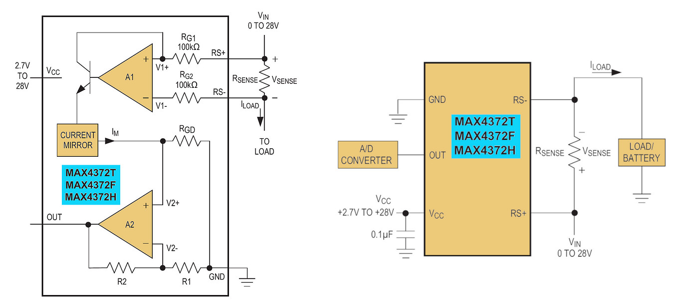
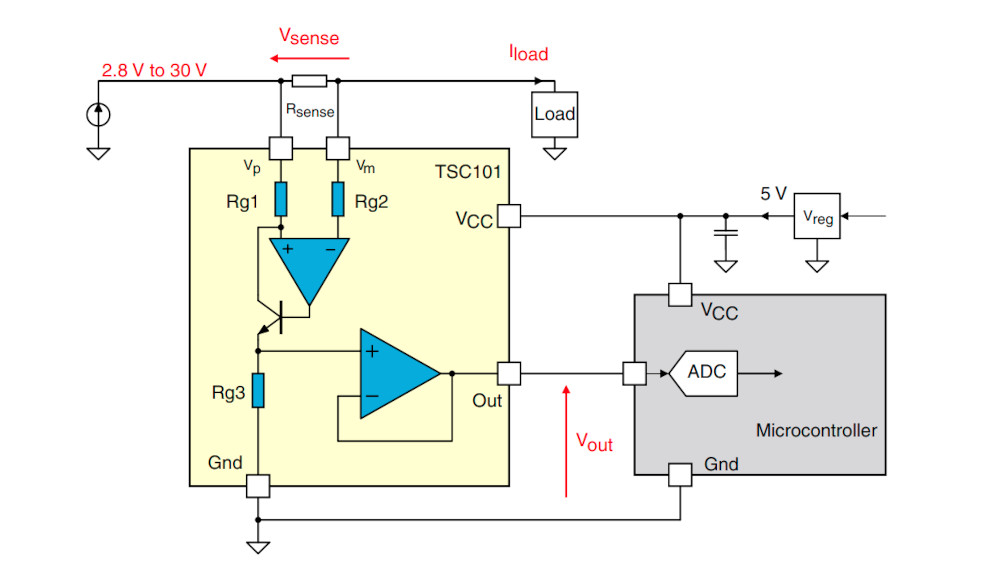
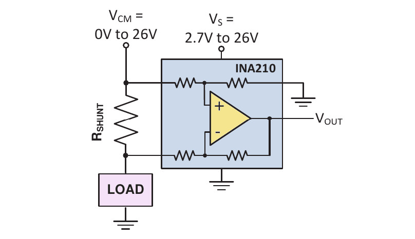
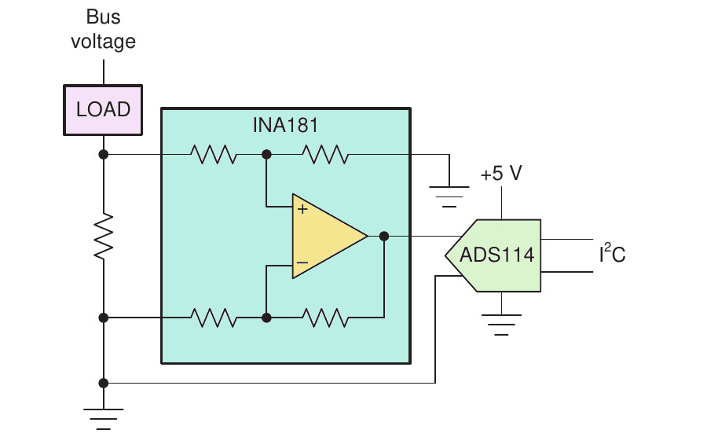
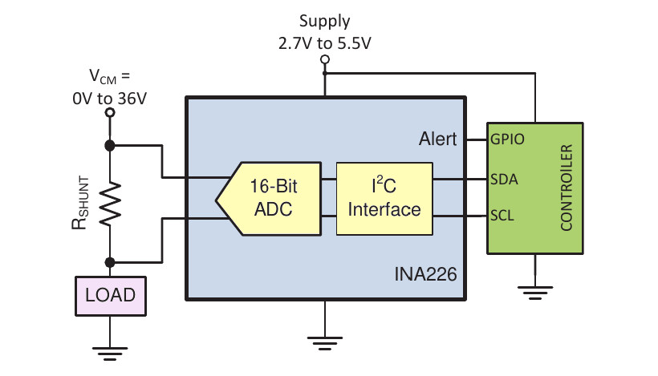
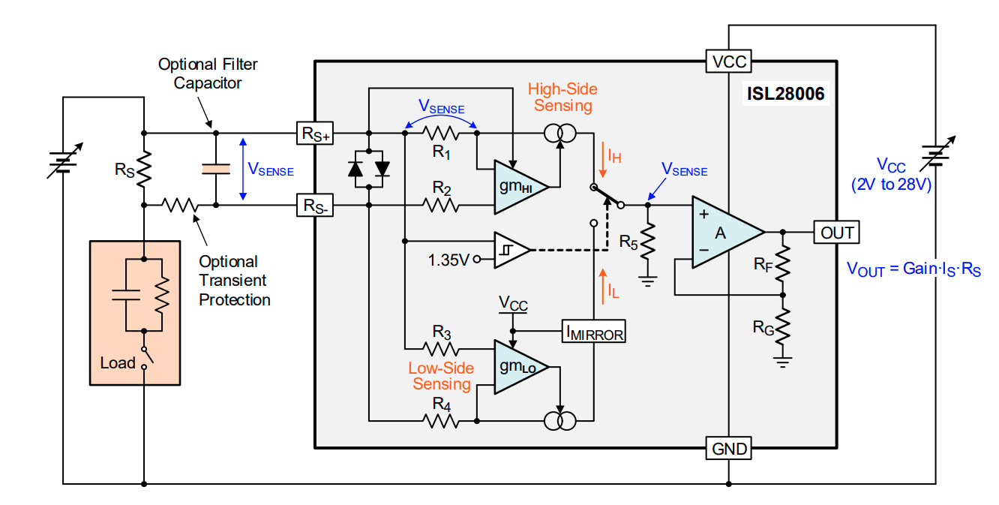
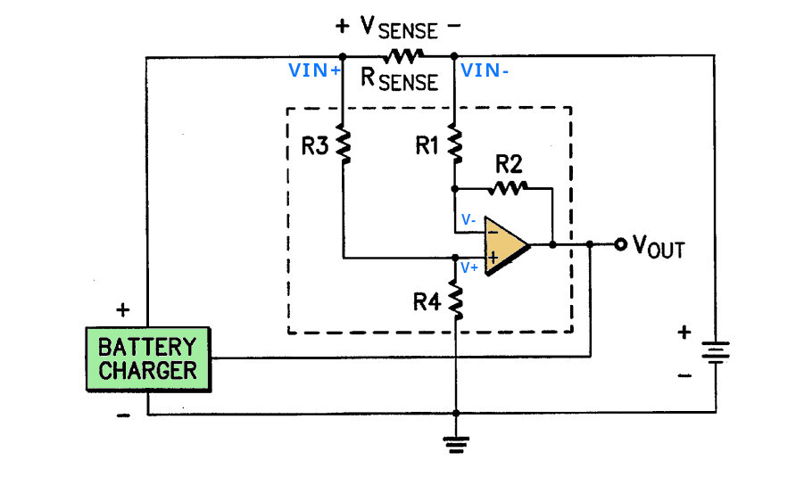
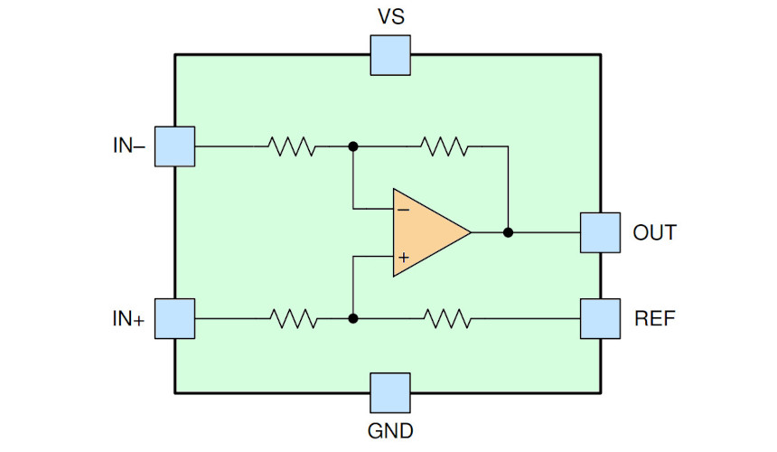

การเลือกใช้ไอซีประเภท Current-Sense Amplifier (CSA) สำหรับการวัดกระแสในวงจรไฟฟ้า-อิเล็กทรอนิกส์#
Keywords: Current-Sense Amplifier, Current Shunt Monitor, Differential Amplifier
- การวัดกระแส (Current Measurement)
- วงจรตรวจจับสัญญาณและขยายกระแส (Current-Sense Amplifiers: CSA)
- แนวทางการเลือกใช้ไอซี CSA - Current Sense Monitor
- พารามิเตอร์ทางไฟฟ้าที่สำคัญสำหรับ CSA
- ตัวอย่างไอซีสำหรับการวัดกระแส (Current Monitor IC)
- แนวทางการสร้าง Differential Amplifier ด้วยออปแอมป์
▷ การวัดกระแส (Current Measurement)#
การวัดกระแสไฟฟ้าในวงจร มีหลายวิธี ได้แก่
- การวัดโดยใช้หลักการของสนามแม่เหล็กไฟฟ้า (Magnetic Field): ใช้เซนเซอร์แบบ Hall Effect ซึ่งให้เอาต์พุตเป็นแรงดันไฟฟ้าที่แปรผันตามปริมาณกระแสไฟฟ้าที่ไหลผ่านขดลวดหรือสายไฟ
- การวัดโดยตรงในวงจร (Direct Current Sensing) โดยวัดแรงดันตกคร่อมตัวต้านทาน: เป็นการวัดแรงดันตกคร่อมที่เกิดขึ้นบนตัวต้านทานที่มีกระแสไหลผ่าน ซึ่งเรียกว่า Current-Sense Resistor หรือ Shunt Resistor
- วิธีนี้ต้องใช้วงจรที่สามารถแปลงแรงดันไฟฟ้าอินพุตแบบ Differential (ซึ่งเป็นแรงดันตกคร่อมที่ตัวต้านทาน) ให้เป็นแรงดันไฟฟ้า-เอาต์พุต และใช้วงจรที่เรียกว่า Current-Sense Amplifier (CSA)
- แรงดันเอาต์พุตสามารถนำไปใช้งานร่วมกับวงจรอื่น เช่น ADC (Analog-to-Digital Converter)
- หากกระแสไฟฟ้ามีค่าต่ำมาก ต้องใช้วงจรขยายสัญญาณ เพื่อให้แรงดันอยู่ในช่วงที่เหมาะสมสำหรับการประมวลผล
- หากกระแสไฟฟ้ามีปริมาณมาก ควรเลือกตัวต้านทานที่มีค่าความต้านทานต่ำ เพื่อลดการสูญเสียพลังงานในรูปของความร้อน (การสูญเสียพลังงานคิดจากสูตร: )
วัตถุประสงค์ของการตรวจจับและวัดกระแสไฟฟ้าในวงจรอิเล็กทรอนิกส์
- เพื่อทราบปริมาณกระแสที่ไหลผ่านโหลด ซึ่งหากกระแสมีค่ามากเกินไป อาจทำให้เกิดความร้อนสูงหรือความเสียหายต่อวงจรไฟฟ้า
- เพื่อประเมินระดับการใช้พลังงานของอุปกรณ์อิเล็กทรอนิกส์ เช่น สำหรับอุปกรณ์ที่ใช้งานแบบ Low-Power Applications
▷ วงจรตรวจจับสัญญาณและขยายกระแส (Current-Sense Amplifiers: CSA)#
- การวัดปริมาณกระแสไฟฟ้าโดยตรง โดยใช้ตัวต้านทานที่มีค่าความต้านทานต่ำ มักอาศัยวงจรที่เรียกว่า Current-Sense Amplifiers (CSA) เพื่อทำหน้าที่ขยายแรงดันตกคร่อมที่เกิดขึ้นบนตัวต้านทานซึ่งอยู่ในระดับที่ต่ำมาก และทำให้ได้สัญญาณเอาต์พุตในช่วงกระแสหรือแรงดันที่ต้องการ
- วงจรพื้นฐานของ CSA ประกอบด้วย "ตัวขยายสัญญาณแบบต่างศักย์" หรือ เรียกว่า วงจรขยายสัญญาณแบบ "ดิฟเฟอเรนเชียล" (Differential Amplifier) ซึ่งมีหลักการทำงานคล้ายคลึงกับวงจรภายในของ Operational Amplifier (Op-Amp) โดยเน้นการตรวจจับและขยายความต่างศักย์ระหว่างขาอินพุตสองขา
- จุดประสงค์หลักคือ การวัดแรงดันตกคร่อมที่เกิดขึ้นบนตัวต้านทานตรวจจับกระแส () ซึ่งมีค่าความต้านทานต่ำมาก เช่น 0.1Ω หรือ 0.05Ω เป็นต้น
- เมื่อมีกระแสไฟฟ้า (ใช้สัญลักษณ์ หรือ )
ไหลผ่าน ไปยังโหลด จะเกิดแรงดันตกคร่อมที่สองขาของตัวต้านทาน
โดยใช้สัญลักษณ์ และ เป็นแรงดันที่ปลายทั้งสองของตัวต้านทาน ตามลำดับ
- ผลต่างแรงดันคือ และ CSA ทำหน้าที่ขยายผลต่างแรงดันนี้ เพื่อให้ได้แรงดันเอาต์พุตที่สามารถนำไปใช้งานได้ เช่น อินพุตของ ADC หรือไมโครคอนโทรลเลอร์
- วงจร Differential Amplifier สามารถสร้างได้โดยใช้ไอซี Op-Amp หรือ Instrumentation Amplifier เป็นพื้นฐาน ซึ่งเป็นวงจรที่มีค่า Common-Mode Rejection Ratio สูงมาก
- ไอซีประเภท CSA ถูกใช้อย่างแพร่หลายในระบบจัดการพลังงาน เช่น การวัดกระแสโหลด และ การตรวจสอบการชาร์จแบตเตอรี่ เป็นต้น
ตำแหน่งของตัวต้านทานตรวจจับกระแส (Current-Sense Configuration) แบ่งเป็น 3 กรณี ได้แก่:
- Low-Side Current Sensing:
- เป็นการต่อตัวต้านทานตรวจวัดกระแส ระหว่างโหลดกับกราวด์
- ข้อดี: วงจรอ่านสัญญาณมีระดับแรงดันต่ำและง่ายต่อการออกแบบวงจร
- ข้อเสีย: กราวด์ของโหลดไม่ได้ต่อตรงกับกราวด์ของระบบ
- High-Side current sensing:
- เป็นการต่อตัวต้านทานตรวจวัดกระแส ระหว่างแหล่งจ่ายแรงดันกับโหลด ต้องใช้ CSA ที่มีความสามารถในการรับช่วงแรงดันอินพุตแบบ Common-Mode Voltage ได้สูง
- ข้อดี: กราวด์ของโหลดต่อตรงกับกราวด์ของระบบ
- ข้อเสีย: วงจรมีความซับซ้อนมากกว่าและต้องใช้ไอซีที่รองรับแรงดันโหมดร่วม (Common-Mode Voltage) ระดับสูง
- In-Line Current Sensing:
- เป็นการต่อตัวต้านทานตรวจวัดกระแสแบบอนุกรมในสายไฟ
- โดยมักใช้ในระบบที่มีสายไฟแยกหลายเส้น เช่น มอเตอร์สามเฟส

รูป: การวัดกระแสโดยวงจร CSA แบบ Low-Side (ซ้าย) และ High-Side (ขวา)
ในปัจจุบันมีหลายบริษัทที่ผลิตและจำหน่ายไอซีประเภท Current-Sensor Monitor เช่น
- Linear Technology / Maxim / Analog Devices Inc. (ADI)
- Texas Instruments (TI)
- STMicroelectronics
- Renesas Electronics
- ROHM Semiconductor
- Microchip Technology
- ONsemi
- Infineon
- Silergy
- SGMICRO

รูป: ไอซี MAX437x สำหรับการวัดกระแสแบบ High-Side (Image Source: Maxim / Analog Devices)

รูป: ไอซี TSC101 สำหรับการวัดกระแสแบบ High-Side (Image Source: STMicrolectronics)

รูป: ไอซี INA210 สำหรับการวัดกระแสแบบ High-Side (Image Source: Texas Instruments)

รูป: ไอซี INA181 สำหรับการวัดกระแสแบบ Low-Side (Image Source: Texas Instruments)

รูป: ไอซี INA226 เชื่อมต่อด้วยบัส I2C (Image Source: Texas Instruments)

รูป: ไอซี ISL28006 ที่สามารถใช้วัดกระแสได้ทั้งแบบ Low-Side หรือ High-Side (Image Source: Renesas Electronics)
▷ แนวทางการเลือกใช้ไอซี CSA - Current Sense Monitor#
- รูปแบบหรือตำแหน่งการต่อตัวต้านทานตรวจวัดกระแส (Measurement Topology): มี 3 กรณีหลัก ดังนี้
- High-side Measurement: การต่อตัวต้านทานตรวจวัดกระแส ระหว่างแหล่งจ่ายไฟและโหลด ซึ่งช่วยให้สามารถตรวจจับกระแสที่ไหลเข้าสู่โหลดได้ทั้งหมด ข้อดีคือสามารถตรวจจับกระแสทั้งหมดที่ไหลเข้าโหลด แต่ต้องใช้ไอซีที่สามารถทนต่อแรงดัน Common-Mode สูงได้
- Low-side Measurement: การต่อตัวต้านทานตรวจวัดกระแส ระหว่างโหลดและกราวด์ ซึ่งเป็นวิธีที่ง่ายและราคาถูกกว่าในการออกแบบ
- In-Line Measurement: การต่อตัวต้านทานตรวจวัดกระแส ในสายที่เชื่อมต่อระหว่างแหล่งจ่ายไฟและโหลด ซึ่งเหมาะสำหรับการตรวจวัดกระแสในวงจรที่ไม่ต้องการแยกแหล่งจ่ายไฟออกจากกัน
- ทิศทางการไหลของกระแส (Current Flow Direction): สามารถจำแนกได้เป็น 2 กรณีตามทิศทางของการไหลของกระแส:
- Unidirectional Current วัดกระแสที่ไหลในทิศทางเดียว เช่น การวัดกระแสที่ไหลจากแหล่งจ่ายไฟไปยังโหลด
- Bidirectional Current วัดกระแสที่สามารถไหลได้ทั้งสองทิศทาง เช่น การวัดกระแสที่อาจไหลย้อนกลับจากโหลดไปยังแหล่งจ่ายไฟ
- ประเภทของสัญญาณเอาต์พุต (Output Type): สามารถมีเอาต์พุตหลายประเภท ขึ้นอยู่กับการใช้งาน:
- เอาต์พุตแบบแอนะล็อก:
- Current Output เอาต์พุตเป็นกระแสที่แปรผันตามกระแสที่ไหลผ่านตัวต้านทานตรวจจับกระแส และในการใช้งานไอซีที่มีเอาต์พุตแบบนี้ จะต้องกับตัวต้านทานที่ขาเอาต์พุตไปยังกราวด์
- Voltage Output เอาต์พุตเป็นแรงดันไฟฟ้าที่แปรผันตามแรงดันตกคร่อมที่ตัวต้านทานตรวจจับกระแส โดยทั่วไปจะเป็นเอาต์พุตแบบมีบัฟเฟอร์ และมีเอาต์พุต-อิมพีแดนซ์ต่ำ
- ยกตัวอย่าง: ไอซี MAX4173 เป็นแบบ Voltage Output แต่ MAX4172 เป็นแบบ Current Output
- อาจมีขาอินพุตสำหรับปิดการใช้งานขาเอาต์พุต (Output Enable Pin) เพื่อประหยัดพลังงาน หากไม่ได้ใช้งานตลอดเวลา
- ในกรณีที่ให้แรงดันเอาต์พุต สามารถจำแนกออกเป็น 2 ตัวเลือก: Single-ended (เอาต์พุตอ้างอิงกับกราวด์) ซึ่งเป็นประเภทที่พบเห็นได้บ่อย และ Differential Output (เอาต์พุตเป็นแรงดันสองขั้ว VOUT+ และ VOUT-) ซึ่งเหมาะกับการส่งสัญญาณระยะไกลหรือลดสัญญาณรบกวน
- เอาต์พุตแบบดิจิทัล:
- มีวงจร ADC รวมอยู่ในไอซี เพื่อแปลงสัญญาณแอนะล็อกให้เป็นดิจิทัล
- ใช้วิธีสื่อสารข้อมูลผ่านบัส เช่น I2C
- อาจมีขาดิจิทัลเอาต์พุตสำหรับฟังก์ชันพิเศษ เช่น การเปรียบเทียบและแจ้งเตือน เมื่อกระแสสูงเกินกว่าระดับที่กำหนดไว้ (Over-Current Detection & Alert)
- เอาต์พุตแบบแอนะล็อก:
- สำหรับไอซีที่ทำงานแบบดิจิทัล ก็มีประเด็นที่ควรพิจารณาต่อไปนี้
- รูปแบบการสื่อสารข้อมูลและโหมดการทำงานด้วยบัส I2C เช่น ความถี่สูงสุดของสัญญาณ Serial Clock การตั้งค่าแอดเดรสของอุปกรณ์
- ความละเอียด หรือ จำนวนบิต (ADC Resolution) ของข้อมูลที่ได้
- อัตราการแปลงสัญญาณแอนะล็อกเป็นข้อมูลดิจิทัล (Samples / sec)
- การตั้งค่าอัตราขยายแรงดันตกคร่อมที่ขั้วอินพุต (Gain Setting / Selection): สามารถทำได้หลายวิธี:
- External Resistors ใช้ตัวต้านทานภายนอก เพื่อกำหนดค่า Gain ตามที่ต้องการและอยู่ในช่วงที่เหมาะสม
- Internal Resistors ใช้ตัวต้านทานภายใน ซึ่งมีความแม่นยำสูง ความคลาดเคลื่อนต่ำ (Low-Drift) และตั้งค่ามาจากโรงงาน
- แบบอัตราขยายคงที่ (Fixed Gain) บางบริษัทจะมีไอซีรุ่นย่อย ให้เลือกใช้ตามค่า Gain
- แบบโปรแกรมเลือกค่าได้ (Programmable Gain) ซึ่งมีการตั้งค่าขยายแรงดันในตัวโดยไม่ต้องใช้ตัวต้านทานภายนอก
- ขาแรงดันอ้างอิงสำหรับแรงดันเอาต์พุต (Reference Voltage Pin: )
- ใช้ปรับระดับแรงดันศูนย์กลางเอาต์พุต (Mid-Range Voltage) หรือ กำหนดช่วงแรงดันเอาต์พุตได้ ในกรณีที่วัดกระแสได้ทั้งสองทิศทาง
- ยกตัวอย่างเช่น
- จำนวนช่องสัญญาณ
- โดยทั่วไปจะมีช่องสัญญาณเอาต์พุต และหนึ่งคู่สัญญาณอินพุต (Single-Channel)
- ไอซีบางรุ่น มีมากกว่าหนึ่งช่องสัญญาณ เช่น Dual-Channel หรือ Quad-Channel เป็นต้น
- ตัวถัง (IC Package) ขาแรงดันไฟเลี้ยง และขาสัญญาณ (I/O Pins)
- เช่น SOT23-6 หรือ SO-8 เป็นต้น
- ความเสถียรต่อการเปลี่ยนแปลงของอุณหภูมิแวดล้อม
- ควรเลือกอุปกรณ์ที่มี Low Offset Drift และ Low Gain Drift เพื่อให้ค่ากระแสที่วัดได้มีความแม่นยำในช่วงอุณหภูมิกว้าง
▷ พารามิเตอร์ทางไฟฟ้าที่สำคัญสำหรับ CSA#
ในการเลือกใช้งาน CSA ควรทำความเข้าใจพารามิเตอร์ทางไฟฟ้าต่อไปนี้ ซึ่งมักพบได้บ่อยเกี่ยวกับไอซีสำหรับสัญญาณแอนะล็อก:
- ข่วงแรงดันไฟเลี้ยง (Supply Voltage: หรือ ) สำหรับการทำงานของไอซีและวงจรภายใน:
- เช่น +2.7V ~ +5.5V หรือ +2.7V ~ +36V เป็นต้น
- ถ้าต้องการใช้งานแบบ Low-Power ก็อาจรองรับแรงดันไฟเลี้ยงในระดับต่ำ (ต่ำกว่า 3V) เช่น +3.0V, +2.7V หรือต่ำกว่า เป็นต้น
- ไอซีบางรุ่น ไม่มีขาแรงดันไฟเลี้ยง แต่ใช้ขา VIN+ สำหรับเป็นแรงดันไฟเลี้ยงภายใน
- ปริมาณการใช้กระแส (Supply Current: )
- สำหรับการทำงานในลักษณะ Low-Power ค่า ควรอยู่ในระดับต่ำ เช่น ในช่วง 10μA - 100μA
- บางกรณีก็ระบุเป็นพารามิเตอร์ Quiescent Current () มีหน่วยวัดเป็น μA โดยมีเงื่อนไขในการทดสอบคือ
- ช่วงแรงดันโหมดร่วม (Common-Mode Voltage Range: ):
- แบ่งเป็น2 กรณี: รองรับช่วงแรงดันเฉพาะช่วงที่เป็นบวกเท่านั้น หรือ รองรับช่วงแรงดันที่เป็นลบด้วย
- ช่วงแรงดันอินพุตโหมดร่วม (Common-Mode) ส่งผลต่อความแม่นในการขยายสัญญาณเอาต์พุต โดยเฉพาะอย่างยิ่งสำหรับการวัดแบบ High-side
- โดยทั่วไป ไอซี CSA สำหรับ High-Side Sensing สามารถรองรับแรงดัน Common-Mode ได้สูงกว่าแรงดันไฟเลี้ยง บางรุ่นมีช่วง ได้สูงถึง 30V, 80V หรือ 100V
- อัตราขยายแบบเต็มสเกล (Full-Scale Gain) และความแม่นของการขยาย (Gain Accuracy):
- อัตราการขยายเต็มสเกลของแรงดันตกคร่อมที่ขั้วอินพุต ซึ่งเป็นตัวระบุความสามารถในการขยายสัญญาณแอนะล็อกอินพุต ให้มีขนาดที่เหมาะสมกับการใช้งานที่ต้องการ
- Full-Scale Gain หมายถึงค่าอัตราขยาย ที่ใช้กับสัญญาณอินพุตสูงสุดที่ยังอยู่ในช่วงเชิงเส้นของวงจรขยายสัญญาณ
- Gain Accuracy มักแสดงเป็นตัวเลข % เช่น ±0.5% หรือ ±0.1% (ดีกว่า) ซึ่งส่งผลโดยตรงต่อความแม่นของการวัดกระแสหรือแรงดัน และก็ขึ้นอยู่กับปัจจัยแวดล้อม อย่างเช่น อุณหภูมิ
- เอาต์พุตที่เป็นแรงดันไฟฟ้า: และ = Voltage Gain มีหน่วยเป็น V/V
- เอาต์พุตที่เป็นกระแสไฟฟ้า: และ = Transconductance ("ทรานส์คอนดักแตนซ์") มีหน่วยเป็น µA/V หรือ mA/V และเรียกวงจรประเภทนี้ว่า Trans-conductance Amplifer
- หากเอาต์พุตเป็นกระแสไฟฟ้า ก็สามารถแปลงเป็นแรงดันไฟฟ้าได้ โดยการต่อกับตัวต้านทาน เชื่อมต่อระหว่างขาเอาต์พุตกับกราวด์ของวงจร:
- การเลือกอัตราขยาย (Gain Selection)
- เลือกตามไอซีสมาชิกในซีรีย์ของไอซี ซึ่งมีค่าอัตราขยายคงที่ แตกต่างกันตามค่าตัวต้านทานที่ใช้
- บางรุ่นโปรแกรมเลือกค่าได้ เช่น ผ่านทางบัส I2C
- แรงดันอินพุตออฟเซต หรือ แรงดันออฟเซตที่ขาอินพุต (Input Offset Voltage: ):
- ค่าแรงดันผิดพลาดที่เกิดขึ้นแม้ไม่มีแรงดันต่างระหว่างขสอินพุต และส่งผลต่อความแม่นยำในการวัดกระแสที่ต่ำ
- ในวงจรขยายเชิงอุดมคติ แรงดันออฟเซตระหว่างขาอินพุตบวกและลบจะเป็นศูนย์โวลต์ (0V) เมื่อมีแรงดันที่เหมือนกันป้อนเข้าสู่ขาอินพุต จะไม่สร้างแรงดันเอาต์พุตใด ๆ
- ในวงจรจริง แรงดันออฟเซตนี้ทำให้เกิดแรงดันเอาต์พุตแม้ไม่มีความต่างแรงดันระหว่างขาอินพุต แรงดันออฟเซตนี้จะถูกคูณด้วยอัตราขยาย และส่งผลโดยตรงต่อแรงดันเอาต์พุต
- อธิบายโดยใช้สมการต่อไปนี้:
- ค่า ควรอยู่ในระดับต่ำมาก อยู่ในระดับไมโครโวลต์ (µV) เช่น 10µV ~ 100µV หรือต่ำกว่า
- แรงดันออฟเซตที่ขาอินพุตมีแนวโน้มเปลี่ยนแปลงตามอุณหภูมิ เรียกการเปลี่ยนแปลงนี้ว่า "อัตราการลอยตามอุณหภูมิ" (Temperature Drift)"
- ช่วงแรงดันอินพุตสูงสุดสำหรับการตรวจจับกระแส (Max. Sense Voltage) เช่น 100mV หรือ 250mV เป็นต้น
- กระแสไบแอส-อินพุต (Input Bias Current: และ ):
- กระแสไฟฟ้าที่ไหลเข้าสู่ หรือ ออกจากขั้วอินพุต IN+ และ IN- ของวงจร ทิศทางขึ้นอยู่กับการทำงานและการต่อวงจรภายนอก
- คำนวณได้จากค่าเฉลี่ย:
- กระแสไฟฟ้าขนาดเล็กมาก (ในระดับนาโนแอมป์ถึงไมโครแอมป์) ที่ไหลเข้าหรือออกจากขาอินพุต (IN+ และ IN−) ของวงจร CSA
- กระแสออฟเซตอินพุต (Input Offset Current: ):
- กระแสที่เกิดจากความแตกต่างของกระแสไบแอสระหว่างขาอินพุตบวกและลบ
- ค่านี้บ่งบอกถึงความไม่สมดุลของการไหลของกระแสในอุปกรณ์ และอาจส่งผลต่อแรงดันอินพุตออฟเซตของวงจรด้วย
- อัตราการปฏิเสธสัญญาณโหมดร่วม (Common-Mode Rejection Ratio: CMRR):
- วงจร CSA ทำหน้าที่ขยายสัญญาณโหมดต่าง และขจัดสัญญาณโหมดร่วมออก
- CMRR เป็นตัวบ่งชี้ความสามารถในการกรองสัญญาณโหมดร่วม หรือตัดส่วนที่มีความเหมือนกันในสัญญาณอินพุตทั้งสองออกจากเอาต์พุต
- หากมีค่า CMRR อยู่ในระดับสูง จะช่วยให้สามารถแยกสัญญาณผลต่างออกจากสัญญาณโหมดร่วมได้ดี
- CMRR คำนวณได้จาก อัตราขยายโหมดผลต่าง () และ อัตราขยายโหมดร่วม ():
- CMRR =
- เช่น และ จะได้ CMRR = 80dB
- แบนด์วิดท์ (Bandwidth):
- มักระบุเป็นค่าความถี่ ซึ่งหมายถึง ความถี่ (Hz) ที่ทำให้ค่า Gain ลดลงจากค่าสูงสุดลงมา 3dB" (หรือลดลงเหลือประมาณ 0.707 เท่าของค่าสูงสุด)
- ช่วงความถี่ที่ CSA สามารถตอบสนองได้ดี ซึ่งมีผลต่อการวัดกระแสในสัญญาณที่มีความถี่สูง หรือมีการเปลี่ยนแปลงอย่างรวดเร็ว
- สัญญาณอินพุตที่มีความถี่สูงจะส่งผลต่ออัตราขยายที่ลดลง แบนด์วิดท์ของวงจร CSA มีผลอย่างมากต่อการตรวจจับกระแสที่มีการเปลี่ยนแปลงอย่างรวดเร็ว
▷ ตัวอย่างไอซีวัดกระแส (Current Monitor IC)#
ไอซีที่ได้เลือกมานำเสนอเป็นตัวอย่างต่อไปนี้ มีโมดูลในลักษณะ Breakout Board ให้เลือกใช้และสะดวกต่อการใช้งาน เนื่องจากตัวถังของไอซี มีขนาดเล็กและเป็นแบบ SMD แนวทางในการเปรียบเทียบ ได้แก่
- การวัดกระแส: วัดแบบ high-side เท่านั้น หรือ ได้ทั้ง high-side และ low-side
- ทิศทางของกระแส: ได้ทิศทางเดียว (uni-directional) หรือ ได้ทั้งสองทิศทาง (bidirectional)
- เอาต์พุต: แรงดันไฟฟ้า หรือ กระแสไฟฟ้า หรือทำงานแบบดิจิทัล
- ช่วงแรงดัน Common-Mode และการใช้แรงดันไฟเลี้ยงแยกกันแบบอิสระ
- สำหรับการทำงานแบบดิจิทัล
- ตัวเลือกสำหรับความละเอียดของ ADC ช่วงจำนวนบิตที่เลือกใช้ได้ ความเร็วในการแปลงข้อมูลของ ADC
- ความละเอียดของข้อมูลต่อ 1 LSB สำหรับปริมาณทางไฟฟ้าที่วัดได้ เช่น กระแส และ แรงดัน
- รูปแบบโปรแกรมเพื่อเขียนหรืออ่านค่าในรีจิสเตอร์ได้ และเชื่อมต่อด้วยบัส I2C
- ปริมาณทางไฟฟ้าที่วัดได้ นอกจากการวัดกระแส (เรียกว่า Shunt Current) เช่น แรงดันไฟฟ้าได้ด้วย (เรียกว่า Bus Voltage) และนำไปคำนวณเป็นกำลังไฟฟ้า(Power)
- ข้อสังเกต:
- ไอซีบางรุ่น ได้รวมตัวต้านทาน Current Sense Resistor ไว้ภายในแล้ว
- ไอซีบางรุ่น ทำงานแบบดิจิทัล สามารถตั้งค่าอัตราขยาย (Programmable Gain) และเลือกช่วงแรงดันอินพุต V_SENSE ได้ รวมถึงความสามารถในการตั้งค่าปรับแก้ตัวเลข (Calibration)
- ตัวอย่างพารามิเตอร์สำหรับการเลือกใช้ไอซี CSA:
- Low input offset volage: <100μV
- Low gain error: <0.5%
- Wide input common mode range: >30V
- Low supply current: <100μA
- High CMRR: >100dB
- Current sensing: high-side, uni-directional
- Output type: buffered voltage output (analog)
- Output impedance: 0.1Ω
- Supply voltage (V_S): 4.5V ~ 76V
- Common-mode voltage (V_CM): 4.5V ~ 76V
- Quiescent current (I_Q): 190μA (max)
- Input offset voltage (V_OS): ±100μV (typ.)
- Gain accuracy: ±1.0% (max)
- Sense voltage (max): 100mV (F), 250mV (T), 1000mV (S)
- Fixed gain (A_V): 5V/V (F), 20V/V (T), 60V/V (S)
- Common-mode rejection ration (CMRR): 124dB (typ.)
- Bandwidth (BW): 250kHz (typ.)
- Current sensing: high-side, uni-directional
- Output type: current output (analog)
- V_S: 2.7V ~ 60V
- V_CM: 2.7V ~ 60V
- I_Q: 60μA (typ.), 125µA (max)
- V_OS: ±200μV (typ.), ±1mV (max)
- Gain accuracy: ±0.5% (typ.)
- Sense voltage (max): 100mV (typ.), 500mV (max)
- Transconductance: 1mA/V (typ.)
- External resistor for output: R_L
- Voltage output: V_O = (I_S x R_S / 1kΩ) x R_L
- CMRR: 115 dB (typ.)
- BW: 440kHz (typ.) (R_L=10kΩ)
- IC Package: 5-Pin, SOT-23
- Current sensing: high-side, bidirectional
- Output type: I2C (digital)
- V_S: 3V ~ 5.5V
- V_CM: 0V ~ 26V
- V_OS: ±10μV (typ.) for PGA=/1
- I_Q: 700μA (typ.)
- Programmable gain: GPA = /1, /2, /4, /8
- Sense voltage (max): ±40mV (/1), ±80mV (/2), ±160mV (/4), ±320mV (/8)
- Gain accuracy: ±0.5% (max)
- CMRR: 120dB (typ.)
- ADC resolution: 9 ~ 12 bits
- ADC conversion: 586 μs (max) for 12 bits
- Voltage measurement: time-multiplexing
- Shunt voltage: V_SHUNT = (V_IN+ - V_IN-)
- Bus voltage: V_BUS = V_IN- (no VBUS pin)
- On-chip calculation:
- Current (I)
- Power (P)
- Current measurement error: ±0.2% (typ.)
- Bus voltage measurement error: ±0.2% (typ.)
- I2C clock:
- Fast mode: 1kHz ~ 400kHz
- High-speed mode: 1kHz ~ 2.56MHz
- I2C slave address: 0x40 (default: A0=A1=0)
- I2C address pins: A0 and A1
- IC package: 8-Pin SOT-23 and 8-Pin SOIC
- Current sensing: high-side, bidirectional
- Output type: I2C (digital)
- V_S: 2.7V ~ 5.5V
- I_Q: 420μA (max)
- V_CM: 0V ~ 36V
- Shunt Voltage Offset: ±10μV (max)
- Bus Voltag Offset: ±7.5mV (max)
- Shunt voltage (max): ±81.92mV (full-scale input range)
- Bus voltage (max): 36V
- Fixed gain
- Gain accuracy: ±0.1% (max)
- CMRR: 140dB (typ.)
- ADC front-end: delta-sigma (ΔΣ)
- ADC resolution: 9 ~ 16 bits
- ADC conversion: 9.068 ms (max) for 16 bits
- Voltage measurement: input voltage multiplexing
- Shunt voltage: V_SHUNT = (V_IN+ - V_IN-)
- Bus voltage (single-ended): via VBUS pin
- On-chip calculation:
- Current (I)
- Power (P)
- I2C Clock:
- Fast mode: 1kHz ~ 400kHz
- High-speed mode: 1kHz ~ 2.94MHz
- I2C slave address: 0x40 (default: A0=A1=0)
- I2C address pins: A0 and A1
- Alert function & pin
- Current sensing: high-side, low-side, bidirectional
- V_S: 2.7V ~ 5.5V
- I_Q: 750μA (max)
- V_CM: –0.3V ~ +85V
- Shunt voltage input range: Two selectable ADC range
- 163.84mV (ADCRANGE=0)
- 40.96 mV (ADCRANGE=1)
- Shunt offset voltage: ±0.3µV (typ.)
- VBUS offset voltage (via VBUS pin): ±1mV (typ.)
- Shunt voltage gain error: ±0.05% (max)
- VBUS voltage gain error: ±0.05% (max)
- Voltage measurement: multiplexing
- Shunt voltage: V_SHUNT = (V_IN+ - V_IN-)
- Bus voltage: V_BUS = V_IN+ (via VBUS pin)
- On-chip calculation:
- Current (I)
- Power (P)
- Energy (E)
- ADC front-end: delta-sigma (ΔΣ)
- ADC resolution: 9 ~ 20 bits
- Alert function & pin
- I2C Clock:
- Fast mode: 1kHz ~ 400kHz
- High-speed mode: 1kHz ~ 2.94MHz
- I2C slave address: 0x40 (default: A0=A1=0)
- I2C address pins: A0 and A1
- Alert function & pin
- IC package: 10-Pin VSSOP
- Current sensing: high-side, low-side, bidirectional
- Output type: I2C (digital)
- V_S: 2.7V ~ 5.5V
- I_Q: 310 μA (typ.)
- V_CM: 0V ~ 36V
- Integrated current sense resistor: 2mΩ (±0.1%)
- Total package resistance: 4.5mΩ (between the IN+ and IN- pins)
- Sense current (max): ±15A
- Bus offset voltage: ±1.25mV (typ.)
- Current sense offset: ±1.25mA (typ.)
- System current sense gain error: 0.15% (max)
- Bus voltage gain error: 0.1% (max)
- CMRR: 150 µA/V (max)
- 2mΩ x 150µA/V = 0.3μV/V => CMRR = 130dB
- ADC resolution: 9 ~ 16 bits
- ADC conversion: 9.068 ms (max) for 16 bits
- Current: 1.25 mA / 1LSB
- Bus voltage: 1.25 mV / 1LSB
- Power: 10 mW / 1LSB
- IC package: 16-Pin TSSOP
- I2C slave address: 0x40 (default: A0=A1=0)
- I2C address pins: A0 and A1
- Alert function & pin
ไอซี CSA บางรุ่น มีการใช้เทคนิคการออกแบบวงจรที่เรียกว่า Capacitively-Coupled Amplifier (CCA) ตัวอย่างไอซีที่ใช้วงจรประเภทนี้ เช่น TI INA186, TI INA28x และ ROHM BD1421xG-LA
▷ แนวทางการสร้าง Differential Amplifier ด้วยออปแอมป์#
ในการเรียนรู้หลักการทำงานของวงจรขยายสัญญาณผลต่าง สามารถสร้างวงจรโดยใช้ออปแอมป์ 1 ตัว และตัวต้านทานอีก 4 ตัว และนำมาศึกษา เช่น การวิเคราะห์วงจร การจำลองการทำงานของวงจร รวมถีงการทดลองจริงโดยการต่อวงจรบนเบรดบอร์ด

รูป: แนวทางการสร้างวงจรขยายสัญญาณผลต่าง โดยใช้ไอซีออปแอมป์ และตัวต้านทาน 4 ตัว โดยจำลองสถานการณ์การชาร์จแบตเตอรี่ โดยมีแบตเตอรี่เป็นโหลดไฟฟ้า และอุปกรณ์ชาร์จเป็นแหล่งจ่ายกระแส

รูป: ไอซีที่มีวงจรขยายสัญญาณผลต่างและมีขา REF สำหรับ Reference Voltage (ถ้าไม่ใช้ ให้ต่อขา REF กับ GND)
จากรูปตัวอย่าง วงจรนี้ประกอบด้วยออปแอมป์ 1 ตัว และตัวต้านทาน 4 ตัว ได้แก่ , , และ (โดยทั่วไปแล้ว ไอซีมักจะร่วมตัวต้านทานที่มีความแม่นยำสูงไว้ด้วยในตัวถัง) การต่อวงจรออปแอมป์ในลักษณะนี้ มักเรียกว่า Difference Amplifier (Subtractor) Circuit ซึ่งเป็นการหาผลต่าง และสามารถขยายสัญญาณผลต่างได้ด้วย เพื่อใช้เป็นเอาต์พุต
ถัดไปเป็นการกำหนดสัญลักษณ์ต่อไปนี้ เพื่อใช้ในการวิเคราะห์วงจร
- และ แรงดันที่ปลายทั้งสองของตัวต้านทาน
- และ แรงดันที่ขา Non-inverting (+) และ Inverting Input (-) ของออปแอมป์
- แรงดันเอาต์พุตของออปแอมป์
การต่อวงจรใช้งานออปแอมป์ มีลักษณะที่เรียกว่า Negative Feedback Configuration มีตัวต้านทาน เชื่อมต่อระหว่างขา (-) และขาเอาต์พุต และจะทำให้ระบบเข้าสู่สภาวะสมดุล เมื่อ
ดังนั้นในการวิเคราะห์วงจร จะให้เงื่อนไขต่อไปนี้
- ให้กระแสไหล ผ่านตัวต้านทาน ไปยังโหลดในทิศทางเดียว เกิดแรงดันตกคร่อม ที่ตัวต้านทานดังกล่าว และ
- อินพุตอิมพีแดนซ์ (Input Impedance) ของออปแอมป์สูงมาก ๆ มีกระแสไหลเข้าที่ขา (+) และ (-) น้อยมาก ๆ ใกล้เคียงศูนย์ ดังนั้นในการวิเคราะห์วงจร ไม่ต้องพิจารณากระแสที่ไหลเข้าขาออปแอมป์
- แรงดันที่ขา (+) และ (-) ของออปแอมป์ ให้ถือว่า เท่ากัน (เรียกว่า Virtual Short) และให้เท่ากับ
- แรงดันไฟเลี้ยงของออปแอมป์ และ อยู่ในช่วงที่กว้างว่า แรงดันเอาต์พุต และแรงดันอินพุตอยู่ในช่วงแรงดัน Common-Mode ของออปแอมป์
เนื่องจาก จึงเขียนสมการใหม่ได้ดังนี้
จากสมการข้างต้น สามารถหาสมการที่แสดงความสัมพันธ์ระหว่างแรงดันอินพุตและเอาต์พุตได้ดังนี้
Common-Mode Voltage () และ Differential Voltage ():
ดังนั้นสมการสำหรับ ที่มีอินพุตเป็น และ เขียนได้ดังนี้
หรือเขียนให้อยู่ในรูปของการขยายสัญญาณในโหมดร่วม และโหมดต่าง และคำนวณหาค่า CMRR จากอัตราขยายของสัญญาณ Differential-Mode () และอัตราขยายของสัญญาณ Common-Mode ()
ถ้าเลือกค่าความต้านทานตามเงื่อนไข Matched Resistor Ratio:
จะได้สมการสำหรับแรงดันเอาต์พุต
ซึ่งจะเห็นได้ว่า แรงดันเอาต์พุต เกิดจากการขยายสัญญาณผลต่างของแรงดันอินพุต โดยอัตราขยายคงที่ ซึ่งกำหนดโดยค่าของตัวต้านทาน หรือเขียนให้อยู่ในรูปความสัมพันธ์ระหว่างกระแสอินพุตและแรงดันเอาต์พุตได้เช่นกัน
อย่างไรก็ตาม ในทางปฏิบัติ ค่าตัวต้านทานอาจความคลาดเคลื่อน และส่งผลต่อสัญญาณเอาต์พุต โดยเฉพาะในกรณีที่ต้องการวัดสัญญาณที่มีค่าน้อย ๆ ในช่วงมิลลิโวลต์
ถ้าให้ และ โดยที่ (Mismatched Resistor Ratio)
จะคำนวณหาค่า CMRR ที่เกิดจากความคลาดเคลื่อนของค่าความต้านทาน ดังนี้
ยกตัวอย่างเช่น ถ้า และ (ความคลาดเคลื่อน +/-0.1%) จะได้ค่า CMRR = 60.83 dB
▷ กล่าวสรุป#
บทความนี้ได้นำเสนอเนื้อหาเกี่ยวกับแนวทางการเลือกใช้งานไอซีประเภท Current-Sense Amplifiers (CSA) เพื่อนำมาใช้ในการวัดกระแสไฟฟ้าในวงจรอิเล็กทรอนิกส์ ซึ่งจะเป็นประโยชน์ต่อการนำไปใช้ศึกษาและวิเคราะห์การใช้พลังงานของวงจร หรืออุปกรณ์อิเล็กทรอนิกส์
This work is licensed under a Creative Commons Attribution-ShareAlike 4.0 International License.
Created: 2025-05-09 | Last Updated: 2025-05-10